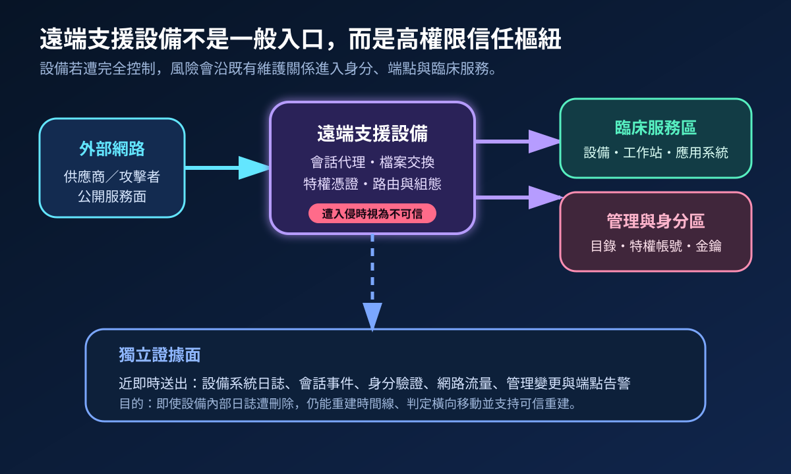
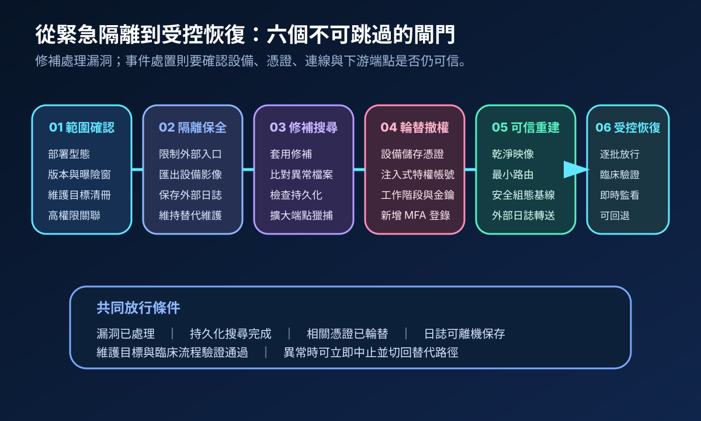
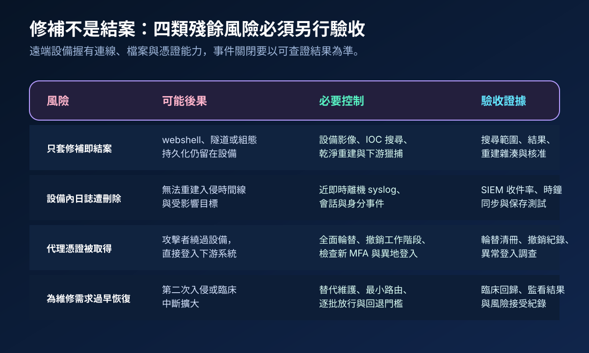

醫療資安國際觀察 · 2026-10-30
遠端支援設備遭零時差利用後如何恢復可信：從隔離到特權輪替
作者：Dr. William｜醫療資訊與資安治理實務工作者
遠端支援設備可代理高權限會話、檔案與維護路徑。遭入侵後，單純修補漏洞不足以恢復信任；設備、儲存憑證、下游端點與事件證據必須一起重驗。
名詞解釋：設備修補與事件清除是兩件事
零時差利用是攻擊者在修補普及前利用未知或剛揭露漏洞；完全系統入侵表示攻擊者可能控制設備、變更組態、植入持久化並取得代理憑證；可信重建則以乾淨映像、已知安全基線、全面輪替與獨立證據重新建立可驗證狀態。
國際現況與適用邊界
BeyondTrust 於 2026 年 10 月 15 日發布 BT26-05，確認 CVE-2026-102764 影響 Remote Support 26.2.3 以下版本；供應商另因 Privileged Remote Access 共用相關程式碼而預防性提供修補，但未宣稱已確認相同利用路徑。Google Threat Intelligence 指出，攻擊者於 2026 年 8 月底已將此漏洞作為零時差利用，植入 webshell 與隧道工具，並刪除設備日誌及端點跡證。CISA 於 10 月 16 日將該漏洞列入已知遭利用漏洞目錄；加拿大網路安全中心同日發布警示，要求盤點部署、確認版本、套用修補並檢查未授權檔案活動。
台灣適用原則：外國警示、漏洞分級與產品公告不直接構成台灣醫院的法定通報期限或強制停機要求。處置仍須依實際產品、部署型態、醫療服務影響、台灣法令、主管機關要求、契約與院內事件指揮決定。
規劃：先界定高權限曝險面
盤點範圍應涵蓋設備版本、雲端或自建部署、公開入口、維護目標、跳板、儲存或注入式憑證、服務帳號、會話紀錄及日誌去向。資訊、資安、醫工、臨床、採購與供應商需共同定義隔離門檻、替代維護方式、憑證輪替責任、證據保存範圍及恢復核准者。驗收指標可包含清冊完整率、外部日誌覆蓋率、輪替完成率、下游獵捕覆蓋率與逐批恢復失敗率。
實作：六階段恢復信任
- 範圍確認：比對版本、部署型態、曝險時間與所有維護目標。
- 隔離保全：限制外部入口，保存設備影像、網路、身分與離機日誌，同時啟動替代維護。
- 修補搜尋：套用供應商更新，搜尋異常檔案、隧道、webshell、日誌缺口及下游端點跡象。
- 輪替撤權：輪替設備可取得的帳密、金鑰與權杖，撤銷工作階段並檢查新 MFA 登錄及異地登入。
- 可信重建：高疑慮設備以乾淨映像重建，套用最小路由、安全基線與近即時離機日誌。
- 受控恢復：按臨床優先序逐批放行，驗證維護功能、端點行為與稽核紀錄，保留停止及回退門檻。

風險：設備內沒有告警不代表未遭入侵
主要失敗模式包括只修補不搜尋持久化、依賴可能已被刪除的本機日誌、漏轉設備可代理的帳密，以及因臨床維修壓力過早恢復。控制重點是設備外證據、全面輪替、乾淨重建、下游獵捕及小批放行。若曝險窗、憑證使用範圍或日誌完整性無法確認，風險評估應採保守邊界，而不是以「未看到異常」結案。

可執行清單
- 能否列出所有遠端支援設備、版本、外部入口、維護目標與擁有人？
- 設備日誌、會話事件與身分紀錄是否近即時送往獨立平台？
- 疑似受影響設備是否先保全證據，再修補、隔離與搜尋持久化？
- 設備可取得或代理的帳密、金鑰、權杖與工作階段是否全面輪替或撤銷？
- 重建後是否限制路由、套用安全基線並驗證離機日誌？
- 恢復是否採逐批放行、臨床回歸、即時監看與可執行回退？
來源
- BeyondTrust｜BT26-05（發布：2026-10-15；更新：2026-10-15；查閱：2026-10-30）
- Google Threat Intelligence Group／Mandiant｜ARMORY CASTLE Exploits BeyondTrust（發布：2026-10-15；查閱：2026-10-30）
- CISA｜Known Exploited Vulnerabilities Catalog：CVE-2026-102764（加入：2026-10-16；查閱：2026-10-30）
- Canadian Centre for Cyber Security｜AL26-025：Critical vulnerability impacting BeyondTrust Remote Support（發布：2026-10-16；查閱：2026-10-30）
內容說明
本文依健康台灣深耕計畫相關治理內容整理，並參考 BeyondTrust、Google Threat Intelligence 與加拿大網路安全中心公開資料，提出遠端支援設備的隔離、證據保全、憑證輪替、可信重建與受控恢復方法；不把外國警示視為台灣法定義務，也不取代主管機關公告、產品支援、事件鑑識、醫療品質程序或法律意見。